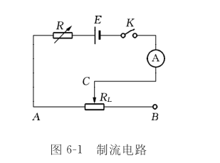
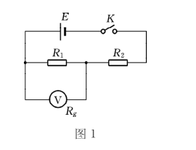
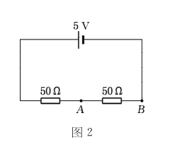
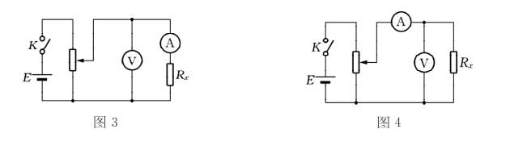

问： 在图６ -１所示的电路中，电阻R起什么作用？不用它会出现什么问题？
答： 电阻R的作用是保证电流不超过某一限定值，若不用电阻R可能会导致电流过大，烧坏电流表。
问： 试证明 ： 用内阻为 R 的伏特计来测量如图 １ 所示线路中电阻 R１ 两端的电位差时 ， 伏特计的读数与 R１ 两端的电位差的实在值之间的百分差为 ：\frac{R_{1}R_{2}}{R_{1}R_{g}+R_{1}R_{2}+R_{2}R_{g}}\times 100\%
若 R１ ＝ R ２ ＝ Rg ＝１００Ω ， 试计算这个值 。
又若 R１ ＝ R２ ＝１００Ω ， Rg ＝１０００Ω ， 再计算这个值 。

答： 伏特计的读数为：U_{c}=\frac{\frac{R_{1}R_{g}}{R_{1}+R_{g}}}{\frac{R_{1}R_{g}}{R_{1}+R_{g}}+R_{2}}E=\frac{R_{1}R_{g}}{R_{1}R_{g}+R_{1}R_{2}+R_{2}R_{g}}E
真实值为：U_{s}=\frac{R_{1}}{R_{1}+R_{2}}E \bigtriangleup U=U_{s}-U_{c}=\frac{R_{1}^{2}R_{2}*E}{(R_{1}+R_{2})(R_{1}R_{g}+R_{1}R_{2}+R_{2}R_{g})}
百分差为：\frac{\bigtriangleup U}{U_{s}}*100\%=\frac{R_{1}R_{2}}{R_{1}R_{g}+R_{1}R_{2}+R_{2}R_{g}}*100\%
若R_{1}=R_{2}=R_{g}=100\Omega ，\frac{\bigtriangleup U}{U_{s}}*100\%=\frac{100*100}{100*100*3}*100\%=33.3\%
若R_{1}=R_{2}=100\Omega ，R_{g}=1000\Omega \frac{\bigtriangleup U}{U_{s}}*100\%=\frac{100*100}{100*1000*2+100*100}*100\%=5\%
问： 要测量如图 ２ 电路中 A、B 两点之间的电压 ， 用如下的三个伏特计 ， 试分别计算测量误差 。 提示 ： 误差来源有两个 ： 可消除和不可消除系统误差 。
（ １ ） ５Ｖ 量程 ， ０．５ 级 ， １０００Ω ／ Ｖ 内阻
（ ２ ） ３Ｖ 量程 ， １．０ 级 ， １００００Ω ／ Ｖ 内阻
（ ３ ） ３Ｖ 量程 ， ０．５ 级 ， １００Ω ／ Ｖ 内阻。

答： （1）△仪=5*0.5%=0.025V
U测=\frac{\frac{50*5000}{50+5000}}{\frac{50*5000}{50+5000}+50}*5v=2.49v
U实=\frac{50}{50+50}*5V=2.50V
△U=0.01V
（2）△仪=3*1%=0.03V
U测=\frac{50*30000*5}{50*30000+50*50+50*30000}=2.498V
U实=\frac{50}{50+50}*5V=2.50V
△U=0.002V
（3）△仪=3*0.5%=0.015V
U测=\frac{50*300*5}{50*300*2+50*50}=2.31V
U实=\frac{50}{50+50}*5V=2.50V
△U=0.19V
问： 伏安法测未知电阻 R ， 可采用图 ３ 、 图 ４ 两种接法 。 它们有何区别？ 试定性说明什么情况下用图 ６-７ ， 什么情况下用图 ６-８ ， 为什么？

答： 图3为内接法，当Rx>>RA内，用此接法，可忽略电流表的分压作用
图4为外接法，当Rx>>RV内，用此接法，可忽略电压表的分流作用
问： 在电学实验中 ， 应该怎样布置仪器和连接电路？ 应注意哪些问题？ 养成哪些良好习惯？
答： 仪器布置原则：走线合理。操作方便，易于观察，实验安全。连接电路时从电路电源正极开始按回路接线，复杂电路可分为几个回路依次连接，连接后检查电路，通电时要将开关断开，进行试触，同时观察电表的变化，尽量单手操作，保证安全，实验后将仪器规整